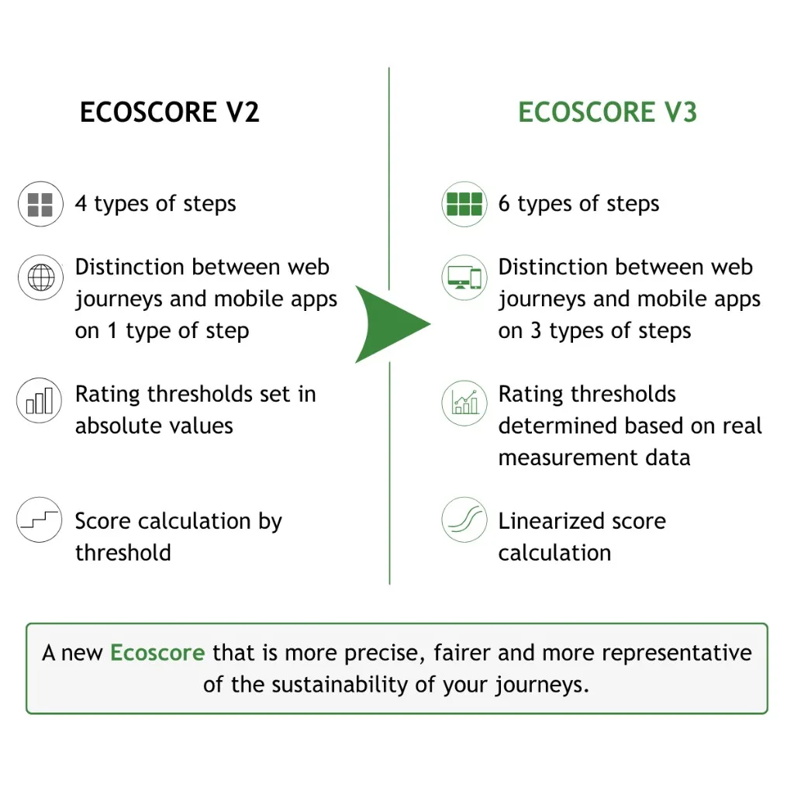

In a context where companies need to manage their digital efficiency, Green IT indicators provide a necessary assessment tool. Greenspector's Ecoscore assesses and compares the efficiency of web and mobile user journeys using three metrics measured on real devices. In 2026, Greenspector is rolling out version 3 of this indicator: an evolution that introduces four major improvements in terms of accuracy and calculation methodology.
Greenspector's Ecoscore: a reminder of the fundamentals
Ecoscore was designed to provide a simple management indicator that accurately reflects the efficiency of a user journey. In addition to the measured metrics—energy consumption in mAh, data volume in Mo, and response time in seconds—Ecoscore consolidates this data into a score out of 100, with no unit. The higher the score, the more efficient the journey.
This indicator is based on the analysis of three critical metrics measured throughout a real user journey on physical devices:
Display time represents the time required to complete each step of the journey. The longer a step takes, the greater its resource and energy footprint. This time is also a key factor in user satisfaction, particularly on older or less powerful devices.
Energy measures the battery discharge rate on the user's device. The higher it is, the less efficient the step. This metric reflects all device activity: computing power, graphics processing, and sensor calls. It is directly linked to daily battery life, as well as to its lifespan: every milliamp-hour consumed accelerates hardware obsolescence.
Data exchanged refers to the amount of upstream and downstream network data required for the journey. It reflects the impact on infrastructure: the more heavily active network equipment and servers are used to process large volumes, the greater their environmental impact.
Ecoscore offers two major advantages: it is independent of the number of steps in the tested journey and independent of the technology used (native, hybrid, or web). This makes it possible to objectively compare journeys of different types, both internally and with competitors.
Ecoscore V3: the major changes

Version 3 of Ecoscore introduces four major improvements to make it more accurate, fairer, and free from threshold effects.
Two new step types for greater accuracy
Ecoscore V2 distinguished four types of steps in a journey: reference steps (device at rest), pauses, loading, and actions/scrolls grouped together. V3 refines this classification by adding two new step types.
First, the concept of "first load" is introduced. This new step type takes into account the fact that loading a page or screen for the first time generally consumes more resources than subsequent loads, particularly because no cache is available. This distinction makes it possible to assess more accurately the parts of a journey that users discover for the first time.
Second, Ecoscore V3 now distinguishes scrolling from other user actions (typing, swiping, and clicking). Scrolling, a frequent and specific action on mobile devices, has different consumption characteristics from clicking or entering data in a form. This separation enables a more precise assessment of the energy behavior of each interaction.
Ultimately, Ecoscore V2 used 4 step types (reference, pause, loading, and action/scroll). V3 uses 6 (reference, pause, first load, loading, action, and scroll), providing greater granularity in journey analysis.
Refined thresholds for web and mobile
For each step type and each metric, Ecoscore is defined by value thresholds that determine whether a step is "very good," "good," "acceptable," or "insufficient." These thresholds form the reference framework used to assign a score.
Ecoscore V3 introduces a systematic distinction between mobile applications and web journeys for data consumption. The volumes of data exchanged differ structurally between these two environments: a native application often has local resources and communicates through optimized APIs, whereas a web journey loads all resources (HTML, CSS, JavaScript, and images) on each visit. This distinction makes it possible to assess each journey against standards adapted to its technical nature.
Overall, the number of thresholds doubles between V2 and V3, providing a more detailed analysis based on the step type, the metric observed, and the nature of the journey (web or mobile).
Thresholds based on the state of the art
One of the most significant changes in Ecoscore V3 concerns how thresholds are determined. Until now, these thresholds were defined using absolute values based on Greenspector's technical expertise. V3 adopts a statistical and empirical approach.
Greenspector's teams analyzed 600,000 measurement points from real journeys tested on the platform. For each metric and each step type, this extensive database made it possible to identify the statistical distribution of the observed performance. V3 thresholds are now positioned on this distribution: for example, the "very good" threshold corresponds to the 20th percentile, while the "good" threshold corresponds to the 40th percentile, and so on.
This method offers two benefits. First, it ensures that the thresholds reflect the actual state of the art of applications and websites in production. Second, it makes it possible to raise certain thresholds where practices have improved and lower others where applications have become more resource-intensive. This results in a fairer and more dynamic reference framework.
Linearized scoring: the end of threshold effects
In Ecoscore V2, each step was assigned to a category (very good, good, acceptable, insufficient, or very insufficient) based on the thresholds it met and received a discrete score (100, 80, 60, 40, or 20). This tiered approach created threshold effects: a step consuming 169 µAh/s and another consuming 171 µAh/s could fall into different categories, with a 20-point difference, even though their actual difference was minimal.
Ecoscore V3 retains category assignment for readability but introduces linearized scoring through interpolation. In practice, if a step falls between two thresholds—for example, between "very good" at 170 µAh/s and "good" at 210 µAh/s—its score is no longer 80 or 60. Instead, it is an interpolated value between these two levels, proportional to its exact position.
Even a marginal improvement in a metric now results in a visible score improvement, reinforcing the relevance of Ecoscore as a tool for managing continuous improvement.
The transition to V3
Ecoscore V3 is available to all our clients. We have chosen a gradual transition approach, aware that this change in the reference framework may affect ongoing monitoring and the objectives set by teams.
In practical terms, V3 introduces a break in the reference framework: it is not possible to directly compare a V2 score with a V3 score because the thresholds, step types, and calculation methods have changed. A journey that scored 65/100 in V2 may receive a different score in V3, either higher or lower depending on its characteristics.
To support this transition, we have integrated the ability to choose the Ecoscore version used for analysis into the interface. Teams can therefore continue monitoring their indicators in V2 for as long as necessary while testing V3 in parallel. This flexibility enables adoption at your own pace, without a sudden break in project dashboards.
What comes after version 3? We are continuing our improvement efforts. The R&D team plans to adjust thresholds periodically based on new measurements, in order to keep Ecoscore aligned with the state of the art in development practices. Other methodological changes are also being considered to further strengthen the representativeness of this central digital efficiency indicator.
In a context where corporate digital efficiency is becoming an essential requirement for environmental responsibility and sovereignty, having a reliable and evolving indicator is crucial. Ecoscore V3, the result of 14 years of R&D and the analysis of thousands of real user journeys, meets this need by enabling organizations to concretely measure, compare, and improve the environmental impact of their applications, journey after journey and sprint after sprint.